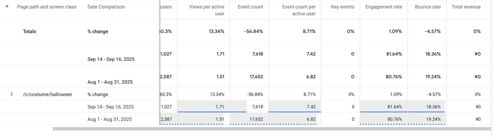
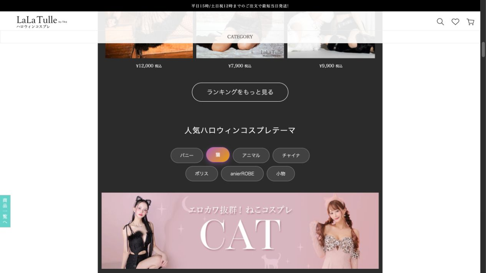

順位だけで、
元に戻さない。
Halloween Page · 検索と商品探索を再設計。
約15位へ低下。それでも、1週間観察。
GA4のユーザー当たり行動は悪化せず。旧構造へ戻さず、観察を続ける判断を提案しました。
7–9改修前
15改修直後
29/28–10/1
7–910月初旬
2025年の主要キーワードの観測。平均2位は9/28–10/1の記録で、現在の順位や構造変更の因果的な効果を示すものではありません。

期間の長さが異なるため、総Users・総Eventsは評価から除外。ユーザー当たり指標とRateを、方向性の確認に限定して使いました。
Lighthouse SEO92/100
HTML・見出し構造を整備した後のSEOスコア。
Search Console 検索順位2
2025/9/28–10/1の主要キーワード平均。
改修前
カテゴリ別の商品が縦に続き、下部までの移動が長かった。
1次改善
見出し・商品導線・ビジュアルを見直し、SEOを整備。
シーズン終了後の再改善
カテゴリ切替で表示をまとめ、スクロール量を大幅に削減。
改善前
1次改善後
各画面の中をスクロールして比較できます。既存ポートフォリオPDFの掲載画面を高解像度で抽出しています。

スクロール削減は構造変更として記録。削減率は未計測のため掲載していません。